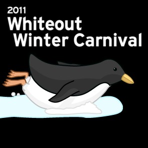
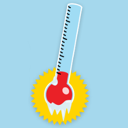
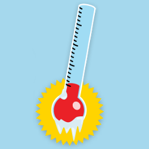
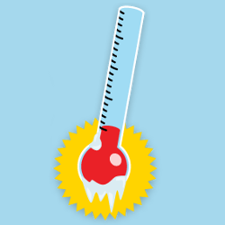

The RPI Winter Carnival began in 1949 as "Winter Weekend", an event organized by the Rensselaer Outing Club before the "Snowflake Saturnalia" dance. It included ice skating, a snow sculpture contest, bobsledding and ski races.
The Winter Carnival continued to be held annually throughout the 1960s.
The Winter Carnival continued to be held annually throughout the 1960s.

In 1978, the Winter Carnival was revived only to die again in the 1980s. The carnival was once again revived in 2009 and has continued since.
Click here to see more information on the history of the RPI Winter Carnival.
Click here to see more information on the history of the RPI Winter Carnival.


 



Winter Carnival 2014
This year's Winter Carnival, Arctic Frost, will feature a series of winter themed activities and games including ice skating, food, live music, comedic performances by Rensselaer student groups and much more!
Check out our Facebook Page for more info.